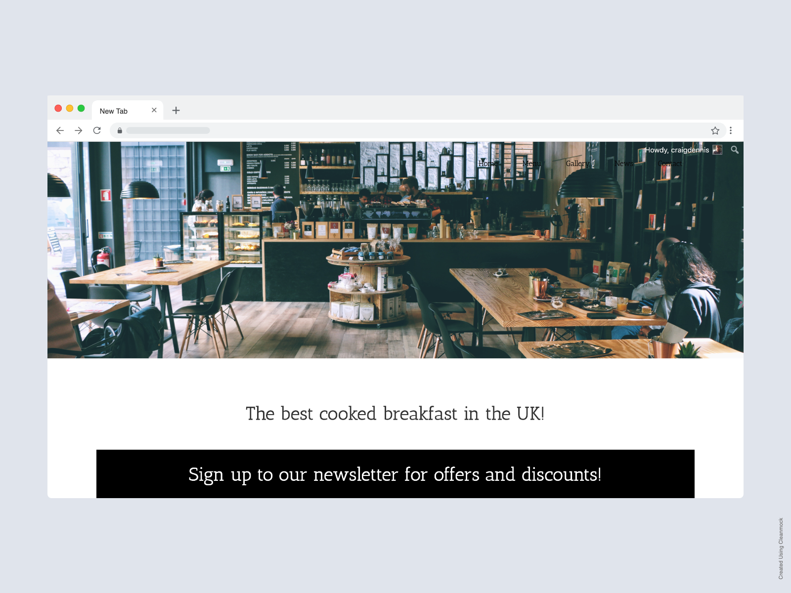

Portfolio
Actor Portfolio
Ted wanted a website building as an extension of his portfolio as
an actor and a musician. The goal was to showcase Ted’s ability
and to make getting in contact with him as easy as possible.
We achieved this by using his showcase video as the first thing
you see when you get onto his site. We wanted whoever was visiting
his site to be able to see Ted’s ability right from the start. We
also added all of the important information that would be need if
someone was looking to hire Ted in a film. We included his bio,
his headshots and the films he has starred in.

Dog Groomers
This website is an example of a website design for a dog grooming. It contains lots of images to showcase the work taken care of by the dog grooming so customer can see how well groomed their dog can be. It also let customers know the services the the dog groomer can do and a section about the dog grooming to help build trust with the customer. Throughout the website there are multiple call to actions making it easy for the customer to book if they are interested. This website was created with HTML, CSS and Bootstrap.

Cafe
This website is an example of a breakfast cafe. It contains a large header image which can showcase images of the cafe or various food items from the menu. There are sections on the home page that presents any offers that the cafe may have, a section to collect emails for direct email marketing and a gallery for any food image to display the food that customers can buy. This website was created with WordPress and Custom CSS.
Cover'd In Punk
Cover’d In Punk wanted a simple single page wesbite that is a home for all of their music and social links. We decided to code the website in HTML/CSS due to the fact that the website won’t be update that often. They were after a site that at a glance contained all the information revelant to their fans. To help the band get in contact with anyone that would like to hire them we added a contact form at the bottom.